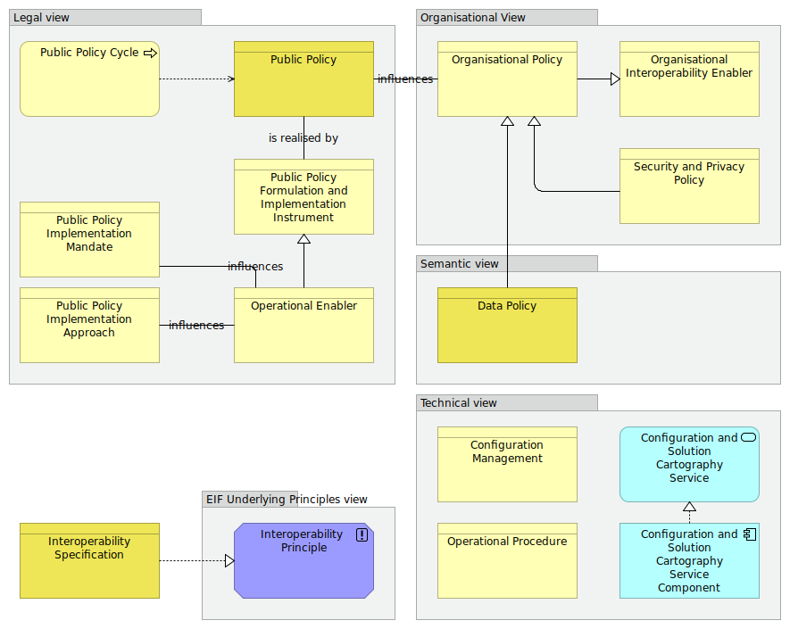

Interoperability Governance viewpoint
(
)

The Interoperability Governance viewpoint models the most salient Architecture Building Blocks that refer to decisions on interoperability frameworks, institutional arrangements, organisational structures, roles and responsibilities, policies, agreements and other aspects of ensuring and monitoring interoperability at national and EU levels. As such, it does not include operational Architecture Building Blocks like interoperability agreements. Interoperability governance is the key to a holistic approach on interoperability, as it brings together all the instruments needed to apply it. Source: The New EIF https://ec.europa.eu/isa2/sites/isa/files/eif_brochure_final.pdf Narrative: The selected Architecture Building Blocks from the five different views highlight the Architecture Building Blocks of the EIRA that are related to Interoperability Governance: 1. The selected Architecture Building Blocks of the legal view show that a [Public Policy] is associated with a [Public Policy Cycle] where it is created and governed. An [Operational enabler], influenced by a [Public Policy Implementation Mandate] and a [Public Policy Approach], is a specialisation of a [Public Policy and Implementation Instrument], which realises a [Public Policy]. 2. The selected Architecture Building Blocks of the organisational view show that the [Public Policy] influences an [Organisational Policy] which is a specialisation of an [Organisational Interoperability Enabler]. The [Security and Privacy Policy] is a specialisation of an [Organisational Policy]. 3. The selected Architecture Building Blocks of the semantic view that [Data Policies] are specialisations of [Organisational Policies]. 4. The selected Architecture Building Blocks of the technical view show that a [Configuration and solution Cartography Service Component] realises a [Configuration and Solution Cartography Service]. An [Operational procedure] defines a process for operating a solution and [Configuration Management] is used in order to manage the technology stack of an organization. 5. The selected Architecture Building Blocks of the EIF Underlying Principle view show that [Interoperability Specifications] realise [Interoperability Principles], the general intended properties used to achieve interoperability. The interoperability Specifications can be used to define the interoperability aspects for any of the Architecture Building Blocks.
dct:title
Interoperability Governance viewpoint
Public Policy Cycle
Public Policy Implementation Approach
Public Policy Implementation Mandate
Operational Enabler
Public Policy Formulation and Implementation Instrument
Public Policy
Organisational Interoperability Enabler
Organisational Policy
Security and Privacy Policy
Data Policy
Configuration Management
Operational Procedure
Configuration and Solution Cartography Service
Configuration and Solution Cartography Service Component
Interoperability Principle
Interoperability Specification